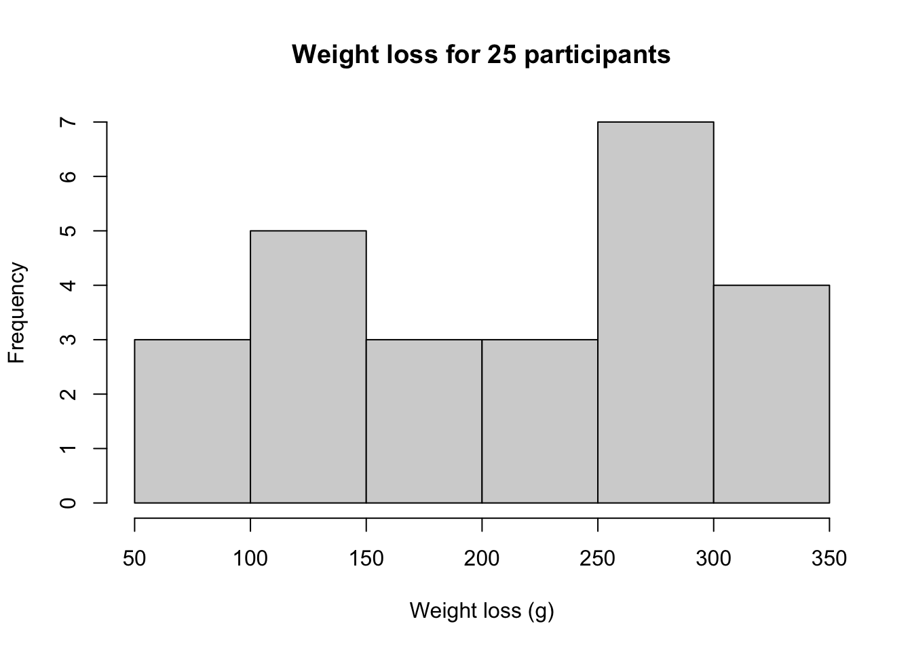
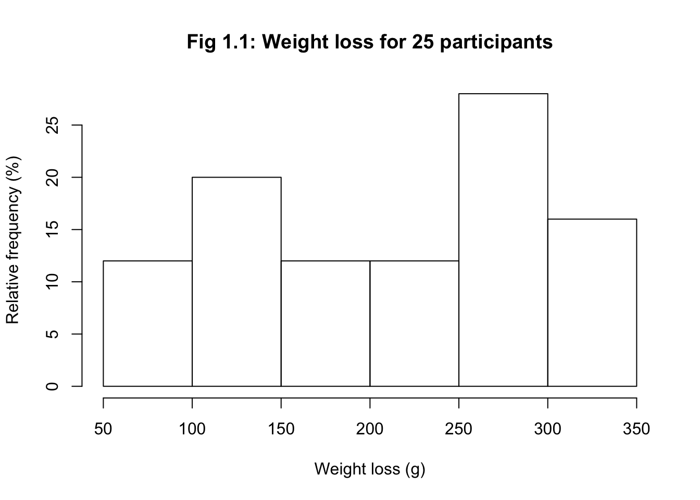

Module 1: Solutions to Learning Activities
Activity 1.1
25 participants were enrolled in a 3-week weight loss programme. The following data present the weight loss (in grams) of the participants:
255 198 283 312 283
57 85 312 142 113
227 283 255 340 142
113 312 227 85 170
255 198 113 227 255- Enter these data into R.
weightloss <- c(255, 198, 283, 312, 283, 57, 85, 312, 142, 113,
227, 283, 255, 340, 142, 113, 312, 227, 85, 170,
255, 198, 113, 227, 255)- What type of data are these?
These are continuous numeric data.
- Construct an appropriate graph to display the relative frequency of participants’ weight loss. Your graph should start at 50 grams, with weight loss grouped into 50 gram bins. Provide appropriate labels for the axes and give the graph an appropriate title.
# Check the default histogram:
hist(weightloss)# The default values look ok, so let's add labels and titles
hist(weightloss, xlab="Weight loss (g)", main="Weight loss for 25 participants")
Note that the question requests relative frequencies, so we can use the code in Section 1.12 to amend this graph:
h <- hist(weightloss, plot=FALSE)
h$density <- h$counts/sum(h$counts)*100
plot(h, freq=FALSE,
xlab="Weight loss (g)",
ylab="Relative frequency (%)",
main="Fig 1.1: Weight loss for 25 participants")
Activity 1.2
Researchers at a maternity hospital in the 1970s conducted a study of low birth weight babies. Low birth weight is classified as a weight of 2,500g or less at birth. Data were collected on age and smoking status of mothers and the birth weight of their babies. The file Activity_S1.2.rds contains data on the participants in the study. The file is located on Moodle in the Learning Activities section.
Use R to create a 2 by 2 table to show the proportions of low birth weight babies born to mothers who smoked during pregnancy and those that did not smoke during pregnancy.
library(jmv)
babies <-readRDS("data/activities/Activity_S1.2.rds")
# Examine the first six rows of data
head(babies)## AGE AgeGrp BWT LOW SMOKE
## 1 14 <20 years 2466 Low birth weight Yes
## 2 14 <20 years 2495 Low birth weight No
## 3 14 <20 years 3941 Normal birth weight No
## 4 15 <20 years 2353 Low birth weight No
## 5 15 <20 years 2381 Low birth weight No
## 6 15 <20 years 2778 Normal birth weight No# Create a two-way table showing row percents
contTables(data=babies, rows=SMOKE, cols=LOW, pcRow=TRUE)##
## CONTINGENCY TABLES
##
## Contingency Tables
## ─────────────────────────────────────────────────────────────────────────────────
## SMOKE Low birth weight Normal birth weight Total
## ─────────────────────────────────────────────────────────────────────────────────
## Yes Observed 30 44 74
## % within row 40.54054 59.45946 100.00000
##
## No Observed 29 86 115
## % within row 25.21739 74.78261 100.00000
##
## Total Observed 59 130 189
## % within row 31.21693 68.78307 100.00000
## ─────────────────────────────────────────────────────────────────────────────────
##
##
## χ² Tests
## ─────────────────────────────────────
## Value df p
## ─────────────────────────────────────
## χ² 4.923705 1 0.0264906
## N 189
## ─────────────────────────────────────Answer the following questions:
- What was the total number of mothers who smoked during pregnancy?
There were 74 mothers who smoked during pregancy.
- What proportion of mothers who smoked gave birth to low birth weight babies? What proportion of non-smoking mothers gave birth to low birth weight babies?
41% of mothers who smoked and 25% of non-smoking mothers gave birth to low birth weight babies.
- Use R to construct a stacked bar chart of the data to examine if there a difference in the proportion of babies born with a low birth weight in relation to mother’s age? Provide appropriate labels for the axes and give the graph an appropriate title.
We follow the instructions for creating a stacked bar chart in Module 1. First we create a table of low birth weight by mothers’ age-group, and create a stacked bar chart (to check that we’re on the right track):
counts <- table(babies$LOW, babies$AgeGrp)
counts##
## <20 years 20-24 years 25-29 years 30-34 years
## Low birth weight 15 25 15 4
## Normal birth weight 36 44 27 18
##
## 35 or more years
## Low birth weight 0
## Normal birth weight 5barplot(counts,
main="Fig 1.2: Frequency of low birth weight by mother's age group",
legend = rownames(counts), beside=FALSE)We then calculate the relative frequency of low-birth weight by mothers’ age group
percent <- prop.table(counts, margin=2)*100
percent##
## <20 years 20-24 years 25-29 years 30-34 years
## Low birth weight 29.41176 36.23188 35.71429 18.18182
## Normal birth weight 70.58824 63.76812 64.28571 81.81818
##
## 35 or more years
## Low birth weight 0.00000
## Normal birth weight 100.00000and use the
barplot()command, as per the notes:
barplot(percent,
main="Fig 1.3: Relative frequency of low birth weight by mother's age group",
legend = rownames(percent), beside=FALSE)- Using your answers to the question a) and b), write a brief conclusion about the relationship of low birth weight and mother’s age and smoking status.
In the study, the greatest number of babies were born to mothers in the 20-24 years age group, with the number of babies born declining with increasing maternal age for mothers older than 20-24 years (Figure 1.2). A larger proportion of mothers in the <20 years, 20-24 years and 25-29 years age groups gave birth to low birth weight babies compared to mothers aged 30-34 years. No low birth weight babies were born to mothers aged 35 or more (Figure 1.3).
A larger proportion of mothers who smoked during pregnancy gave birth to low birth weight babies compared to mothers who did not smoke during pregnancy.
NB: You will revisit two-way tables in Module 7 where you will conduct statistical tests to determine if the proportions are statistically different to each other.
Note: Coding graphs, particularly clustered and stacked bar graphs can be difficult! The site https://r-graph-gallery.com/ gives excellent instructions on constructing different types of graphs in R.
Activity 1.3
Using R, estimate the mean, median, mode, standard deviation, range and interquartile range for the data Activity_S1.3.rds, available on Moodle.
act1_3 <- readRDS("data/activities/Activity_S1.3.rds")
descriptives(act1_3, mode=TRUE, iqr=TRUE, pc=TRUE)##
## DESCRIPTIVES
##
## Descriptives
## ────────────────────────────────────
## Lead_concn
## ────────────────────────────────────
## N 15
## Missing 0
## Mean 1.500000
## Median 1.500000
## Mode 1.900000
## Standard deviation 0.8434623
## IQR 1.0000000
## Minimum 0.1000000
## Maximum 3.200000
## 25th percentile 0.9500000
## 50th percentile 1.500000
## 75th percentile 1.950000
## ────────────────────────────────────We can use the
descriptives()function to obtain summary statistics. Examining the help entry fordescriptives()shows we can request the mode usingmode=TRUE, the interquartile range usingiqr=TRUEand the percentiles (by default, the quartiles) usingpc=TRUE. The mean is estimated as 1.50, the median is 1.5 and the mode is 1.9. The standard deviation is estimated as 0.843, the range is from 0.1 to 3.2, and the inter-quartile range is from 1.0 to 2.0 (both rounded to 1 decimal place).
Note: no units were provided for the data used in this question. Summary statistics must be presented with their units where the units are available.
Activity 1.4
Data of diastolic blood pressure (BP) of a sample of study participants are provided in the dataset Activity_S1.4.rds. Compute the mean, median, range and SD of diastolic BP.
act1_4 <- readRDS("data/activities/Activity_S1.4.rds")
descriptives(act1_4)##
## DESCRIPTIVES
##
## Descriptives
## ──────────────────────────────────
## diabp
## ──────────────────────────────────
## N 100
## Missing 0
## Mean 82.23000
## Median 83.00000
## Standard deviation 13.01522
## Minimum 56.00000
## Maximum 118.0000
## ──────────────────────────────────The mean is 82.2 mmHg and the median is 83.0 mmHg. The range is 56.0 to 118.0 mmHg (62.0 mmHg) and the standard deviation is 13.02 mmHg.
Note that the original data have one decimal place, so we can report the median with one decimal place. Although we are justified in presenting the mean to two decimal places (1 extra than the original data), and the standard deviation with three decimal places (1 more than the mean), there is little to be gained in this level of precision when presenting summary statistics for blood pressure.
Activity 1.5
In a study of 100 participants data were missing for 5 people. The missing data points were coded as ‘99’. The mean of the data was estimated as 45.0 with a standard deviation of 5.6; the smallest and greatest values are 16 and 65 respectively.
If the researcher analysed the data as if the 99s were real data, would it make the following statistics larger, smaller, or stay the same?
- Mean
The mean will be larger.
- Standard Deviation
The standard deviation will be larger.
- Range
The range will be larger. The smallest value is still 16, but the largest is 99, and so the range is 99 − 16 = 83.
Activity 1.6
Which of the following statements are true? The more dispersed, or spread out, a set of observations are:
- The smaller the mean value
This is not true because the mean is not influenced by the spread of the values (if the distribution is symmetrical around the mean value)
- The larger the standard deviation
This is true. The larger the spread, the larger the deviations from the mean. Hence the standard deviation will be larger.
- The smaller the variance
This is not true. The variance will be larger if the deviations from the mean are larger.